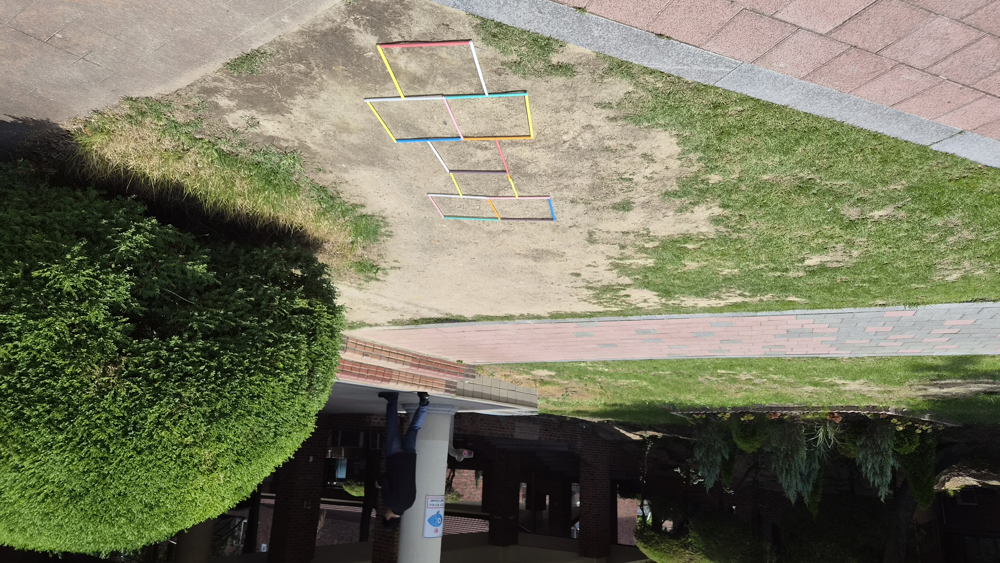

Prototype
The logic worked; the material failed.


The prototype was light, fragile, and difficult to fix onto the stiff ground. This failure clarified what the final installation needed: stronger material, clearer visibility, and better weight.